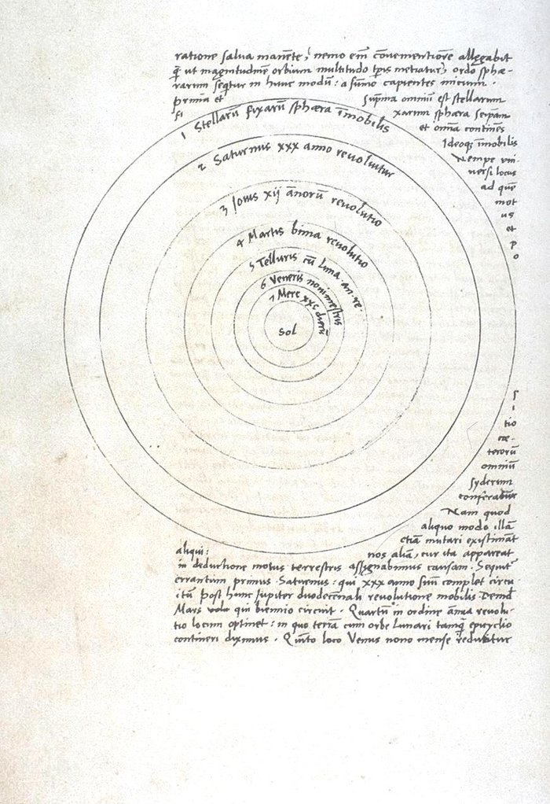

Nei modelli di Tolomeo gli epicicli di Marte, Giove e Saturno vanno tutti di pari passo con il Sole medio, e i centri degli epicicli di Venere e Mercurio si muovono con esso, cosa che la pagina 4.2 ha lasciato senza una ragione. Copernico collegò i moti dei cinque pianeti a un solo punto, il posto del Sole medio, su un’unica scala per tutti, e fissò quel punto.
La geometria di ciascun modello resta quella di Tolomeo, quindi le direzioni che prevede non cambiano, e la curva dell’errore della pagina 4.2 risulta la stessa. I cinque modelli separati diventano invece un solo sistema: i pianeti si dispongono in un ordine, e le loro distanze diventano una previsione che il cielo reale può verificare.
1 · OsservazioneIl Sole nel moto di ogni pianeta
Ogni pianeta ripete la sua anomalia legata al Sole una volta nel suo periodo sinodico, e ogni sua fase cade nella stessa posizione rispetto al Sole. La Figura 1 segue i cinque pianeti nel 2022–2025 con la loro elongazione, la longitudine eclittica del pianeta meno quella del Sole.
(a) Venere e Mercurio
(b) Marte, Giove e Saturno
Venere e Mercurio oscillano da una parte all’altra del Sole, e in questi anni non se ne sono mai allontanati più di 47,2° e 27,4°. Marte, Giove e Saturno restano indietro rispetto al Sole attraverso ogni elongazione. La tabella dà il periodo sinodico di ciascun pianeta, il tempo medio fra due suoi cappi nel secolo 1926–2025.
| pianeta | periodo sinodico $S$ | epiciclo di Tolomeo, dove il deferente è 60 |
|---|---|---|
| Mercurio | 115,88 giorni | 22,5 |
| Venere | 583,92 giorni | 43,17 |
| Marte | 779,93 giorni | 39,5 |
| Giove | 398,88 giorni | 11,5 |
| Saturno | 378,10 giorni | 6,5 |
Tolomeo inserisce il Sole in ciascuno dei suoi cinque modelli separatamente. Per Marte, Giove e Saturno il raggio KP dell’epiciclo resta parallelo alla linea dalla Terra al Sole medio (X 6). Per Venere e Mercurio il centro K dell’epiciclo si muove con il moto del Sole medio (IX 3), così che sta nella direzione del Sole medio, vista dall’equante invece che dalla Terra (X 1–3 per Venere).
Ogni modello ha anche un rapporto proprio, la grandezza del suo epiciclo nell’ultima colonna della tabella, adattato a quel solo pianeta, quindi i modelli non dicono quale pianeta sia più vicino.
Al tempo di Tolomeo l’ordine di Saturno, Giove e Marte era condiviso, ma Venere e Mercurio erano posti sotto il Sole dagli astronomi più antichi e sopra di esso da alcuni dei loro successori, e la questione non si poteva risolvere, «poiché nessuna delle stelle ha una parallasse apprezzabile». Egli mantenne l’ordine più antico, con il Sole nel mezzo (IX 1).
2 · ModelloLa disposizione di Copernico
Scambiare il deferente e l’epiciclo
Prendiamo Marte nel modello della pagina 4.2 e scriviamo il suo posto come somma di due vettori, dalla Terra O al centro K dell’epiciclo, e da K al pianeta P. Il secondo ha sempre lunghezza $r$ e punta al Sole medio, alla longitudine eclittica $\bar\lambda_\odot$:
$$\vec{\text{OP}} = \vec{\text{OK}} + \vec{\text{KP}}, \qquad \vec{\text{KP}} = r\,\hat u(\bar\lambda_\odot).$$Due vettori si possono sommare in entrambi gli ordini. Tracciamo $\vec{\text{KP}}$ da O invece che da K, e chiamiamo ☉ la sua estremità. Allora O, K, P e ☉ sono i vertici di un parallelogramma, e
$$\vec{\text{OP}} = \vec{\text{O}\odot} + \vec{\odot\text{P}}, \qquad \vec{\text{O}\odot} = \vec{\text{KP}}, \qquad \vec{\odot\text{P}} = \vec{\text{OK}}.$$P è lo stesso punto, quindi si vede nella stessa direzione in ogni istante. È lo scambio fra un epiciclo e un eccentrico della pagina 3.1, applicato a un pianeta. L’epiciclo è diventato un cerchio di raggio $r$ attorno alla Terra, sul quale ☉ fa un giro all’anno nella direzione del Sole medio, e il deferente, con il suo centro C e il suo equante Q, si è spostato in blocco da O a ☉.
Per Venere e Mercurio usiamo il modello semplice della pagina 4.1, in cui il deferente, di raggio 1 attorno alla Terra, porta K alla longitudine eclittica del Sole medio. K è allora il punto ☉ stesso, e il pianeta gli gira attorno sull’epiciclo, quindi i due cerchi si scambiano i ruoli. (Nel modello completo di Tolomeo K è in quella direzione vista dall’equante, e ☉ si muove su un eccentrico.) La Figura 2 disegna Marte, nel modello della pagina 4.2, e Venere, in quello semplice, in entrambe le descrizioni.
(a) Tolomeo: la Terra O fissa
(b) Copernico: ☉ fisso
Nella figura
- verde
- il deferente, OK e la sua copia ☉P, in entrambi i pannelli
- viola
- l’epiciclo, KP e la sua copia O☉, in entrambi i pannelli
- tratteggio
- in (a), O☉ e ☉P, le copie di KP e OK che chiudono il parallelogramma
Lettura
- $\lambda$
- la longitudine eclittica di P vista da O
Una sola scala per cinque pianeti
Ciascuno dei modelli di Tolomeo misura le sue lunghezze in unità del proprio deferente, quindi nulla lega un modello a un altro. Moltiplicare ogni lunghezza di un modello per lo stesso numero non cambia nessuna direzione vista da O, quindi ogni modello si può ingrandire o rimpicciolire a piacere. Per ogni pianeta scegliamo il numero che rende la lunghezza O☉ uguale a 1: dividiamo per $r$ il modello di un pianeta esterno e lasciamo com’è quello di un pianeta interno.
Allora tutti e cinque i modelli hanno lo stesso vettore $\vec{\text{O}\odot}$, di lunghezza 1 verso il Sole medio, e quindi lo stesso punto ☉, e si possono disegnare in un’unica figura. L’unità di lunghezza è ora la distanza dalla Terra a ☉, l’unità astronomica (au). Il raggio $a$ del cerchio di ciascun pianeta attorno a ☉, la sua distanza media da ☉, è il suo epiciclo letto in un modo nuovo:
$$a = \frac{1}{r} \ \text{(Marte, Giove, Saturno)}, \qquad a = r \ \text{(Venere, Mercurio)}.$$Gli epicicli di Tolomeo danno le distanze della Figura 3 e della tabella qui sotto.
(a) i cinque modelli di Tolomeo, ciascuno nella propria scala, il deferente 60
(b) una sola scala, fino a Saturno
(c) il quadrato tratteggiato di (b), ingrandito
Copernico fissò il Sole
Copernico fece un passo in più: «In quiete, tuttavia, nel mezzo di tutto sta il sole», e «tutto ciò che appare come un moto del sole è dovuto piuttosto al moto della terra» (I 10). Sottrarre $\vec{\text{O}\odot}$ da ogni posto sposta l’intera figura senza ruotarla, come fa il pannello (b) della Figura 2. ☉ sta fermo, la Terra gli gira attorno una volta all’anno alla longitudine eliocentrica $\bar\lambda_\odot + 180^\circ$, la sua direzione vista da ☉, e ogni direzione dalla Terra a un pianeta resta com’era.
Il centro di Copernico è, a rigore, il centro del cerchio della Terra, che sta vicino al Sole perché il cerchio della Terra è un eccentrico, come lo era quello del Sole nella pagina 2.1 (V 4). Il punto ☉ di questa pagina, alla distanza 1 nella direzione del Sole medio, è quel centro per una Terra che si muove uniformemente su un cerchio attorno a esso.
Le direzioni dalla Terra dipendono solo da dove stanno i corpi gli uni rispetto agli altri, quindi fissare il Sole non cambia nessuna previsione. Le previsioni vengono dalla disposizione: un solo punto ☉ per i cinque pianeti, e le loro distanze da esso.


I periodi attorno al Sole, e l’ordine
Visto da ☉, un pianeta esterno sta nella direzione di $\vec{\text{OK}}$: la sua longitudine eliocentrica è la longitudine eclittica di K, $\bar\lambda + q$, che cresce in media con il moto medio del pianeta, quindi gira attorno a ☉ nel suo periodo in longitudine eclittica $P_\lambda$ della pagina 4.1. Un pianeta interno sta nella direzione di $\vec{\text{KP}}$, che ruota con $n_\odot + n_\mu$. Con il periodo sinodico $S$ e l’anno $Y$, il tempo $P$ che un pianeta impiega a fare un giro attorno a ☉ è quindi
$$\frac{1}{P} = \frac{1}{Y} - \frac{1}{S} \ \text{(esterni)}, \qquad \frac{1}{P} = \frac{1}{Y} + \frac{1}{S} \ \text{(interni)}.$$La prima è la relazione della pagina 4.1, $1/P_\lambda + 1/S = 1/Y$. Con l’anno sidereo $Y_\text{s}$ della pagina 2.3 al posto dell’anno tropico, $P$ si conta rispetto alle stelle, come lo conta Copernico (V 1).
Moltiplicate per la durata di una relazione fra periodi, le equazioni diventano somme di numeri interi. Tolomeo aveva già notato che per i pianeti esterni gli anni sono uguali ai giri in longitudine più i ritorni in anomalia (IX 3), come nei 79 = 42 + 37 di Marte. Per Venere e Mercurio le sue relazioni fanno fare al pianeta il giro dello zodiaco tante volte quante il Sole; nella disposizione di Copernico i ritorni in anomalia si sommano invece agli anni, e Venere fa il giro del Sole 8 + 5 = 13 volte in 8 anni (V 1).
| pianeta | epiciclo di Tolomeo come distanza $a$ | periodi sinodici in anni (IX 3) | giri attorno al Sole (V 1) | un giro in |
|---|---|---|---|---|
| Mercurio | 0,375 au | 145 in 46 | 46 + 145 = 191 | 0,241 anni |
| Venere | 0,719 au | 5 in 8 | 8 + 5 = 13 | 0,615 anni |
| Marte | 1,519 au | 37 in 79 | 79 − 37 = 42 | 1,881 anni |
| Giove | 5,217 au | 65 in 71 | 71 − 65 = 6 | 11,833 anni |
| Saturno | 9,231 au | 57 in 59 | 59 − 57 = 2 | 29,500 anni |
Le due colonne mettono i pianeti nello stesso ordine: più è lontano dal Sole, più lungo è il giro. Copernico mantenne il principio degli antichi filosofi, «che la grandezza delle sfere si misura dalla durata del tempo», e trovò in esso «una mirabile simmetria dell’universo, e un armonioso legame stabilito fra il moto delle sfere e la loro grandezza, quale non si può trovare in nessun altro modo» (I 10).
Massime elongazioni e cappi
In questa disposizione le osservazioni delle pagine 4.1 e 4.2 assumono una forma semplice. Venere e Mercurio sono più lontani dal Sole nel cielo quando la linea di vista da O è tangente al loro cerchio attorno a ☉. Il raggio ☉P è allora perpendicolare a OP, e il triangolo rettangolo O P ☉ dà
$$\sin\varepsilon_\text{max} = a,$$con $\varepsilon_\text{max}$ la massima elongazione (non l’obliquità). L’epiciclo di Venere di Tolomeo, 43,17 dove il deferente è 60, dà $a$ = 0,719 e una massima elongazione di 46,0°, dentro l’intervallo di quelle reali, da 45,3° a 47,2° (pagina 4.1).
Un pianeta esterno torna indietro quando la Terra, muovendosi più in fretta sul suo cerchio più piccolo, lo sorpassa, quindi un cappio cade all’opposizione, con il pianeta e ☉ da parti opposte della Terra. Copernico chiama questo effetto del moto della Terra una «parallasse» (V 1), e spiega: «tutti questi fenomeni, che gli antichi astronomi cercavano [di spiegare] per mezzo di un epiciclo per ciascun pianeta, avvengono a causa del solo moto della terra» (V 3).
La Figura 4 lo verifica per Marte su due cerchi attorno a ☉, con la distanza e il periodo sinodico di questa pagina, così che solo il moto della Terra possa far tornare indietro la linea di vista.
(a) la Terra e Marte ogni 15 giorni
(b) la longitudine eclittica di Marte, meno quella all’opposizione
Nel pannello (a)
- linee
- la linea di vista da ciascun posto numerato della Terra attraverso Marte nello stesso istante
Un pianeta più lontano ha un $r = 1/a$ più piccolo e torna indietro di meno, quindi i suoi cappi sono più corti: gli archi «appaiono maggiori in Giove che in Saturno e minori che in Marte» (I 10), come nella tabella della pagina 4.1.
Cambia anche la distanza dalla Terra. Marte è a $a - 1 = 0{,}52$ au all’opposizione e a $a + 1 = 2{,}52$ au alla congiunzione, quasi cinque volte più lontano, e Copernico nota che «quando brilla tutta la notte, [esso] sembra uguagliare Giove in grandezza» (I 10).
Copernico senza l’equante
Copernico respinse l’equante, un moto uniforme attorno a un punto che non è il centro del suo cerchio (V 2, pagina 4.2). Per Marte, Giove e Saturno pose il centro D del suo deferente a $\tfrac32 e$ da ☉, dove il C di Tolomeo era a $e$ e Q a $2e$, e vi mise sopra un piccolo epiciclo, l’epiciclo minore, di raggio un terzo di quello, $\tfrac12 e$. Il pianeta fa un giro dell’epiciclo minore per ogni giro del deferente, contato dal raggio del deferente, il che fa due giri rispetto a direzioni fisse (V 4).
La Figura 5 li disegna entrambi sul deferente di Marte, con l’eccentricità ingrandita perché l’epiciclo minore si possa vedere.
il deferente della pagina 4.2 e quello di Copernico, l’eccentricità di Marte triplicata
Nella figura
- verde
- il deferente della pagina 4.2, attorno a C, con il suo equante Q
- blu
- il deferente di Copernico, attorno a D, con il suo epiciclo minore
L’epiciclo minore dà le direzioni dell’equante al secondo ordine e le sue distanze al primo ordine (Esercizio 2). Al secondo ordine le distanze differiscono: quelle dell’equante superano le distanze dell’ellisse di Keplero fino a $\tfrac12 e^2$, quelle dell’epiciclo minore fino a $e^2$. Fitzpatrick chiama il dispositivo di Copernico «un’approssimazione marginalmente meno accurata» di quella di Tolomeo (§ 1.3).
Messo al posto dell’equante nel Marte della pagina 4.2, con gli stessi parametri, l’epiciclo minore sposta il pianeta fino a 25′, e l’errore massimo nel 2010–2025 cresce da 0,88° a 0,91°: rinunciare all’equante rese il modello un poco peggiore. La Figura 6 confronta i due con il Marte reale e fra loro.
(a) l’errore di ciascun modello contro il Marte reale, 2016–2019
(b) l’epiciclo minore meno l’equante, 2010–2025
Keplero riportò il punto dell’equante. Nelle parole di Neugebauer, egli «non solo reintrodusse l’equante per il moto planetario ma lo applicò anche per una migliore rappresentazione del moto della terra, destinato a diventare infine il secondo fuoco dell’orbita ellittica» (HAMA p. 155). La pagina 4.2 ha trovato che, al primo ordine, il fuoco vuoto di un’ellisse è un equante, e la pagina 4.5 verifica l’ellisse stessa.
3 · AdattamentoI periodi e le distanze dei cinque pianeti
Nessun pianeta guadagna un parametro: il suo periodo e la sua distanza sono i moti e l’epiciclo delle pagine 4.1 e 4.2. Ora che le distanze di pianeti diversi si possono confrontare, li adattiamo tutti e cinque, da osservazioni già fatte, come ogni adattamento del corso.
I periodi
Eventi distanti fissano meglio un periodo, perché l’errore di ciascuno viene diviso per il tempo fra essi. I periodi sinodici della sezione 1 sono le pendenze delle rette per gli istanti di ogni opposizione, o congiunzione inferiore, del 1926–2025. L’anomalia zodiacale sposta i singoli intervalli di giorni, ma su un secolo le variazioni si mediano, e le relazioni della sezione 2, con l’anno sidereo, danno i periodi attorno a ☉.
Le distanze
Per Venere e Mercurio ogni massima elongazione dà una distanza, $a = \sin\varepsilon_\text{max}$, esattamente per un cerchio. Nel 1986–2025 cadono in ogni parte dello zodiaco, quindi prendiamo la media dei loro seni. Le massime elongazioni di Venere variano appena, quelle di Mercurio variano molto (Esercizio 3).
Per un pianeta esterno il triangolo più semplice sarebbe una quadratura, con il pianeta a 90° dal Sole, dove l’angolo nella Terra è retto e $\cos\psi = 1/a$. L’angolo $\psi$ in ☉ verrebbe dal tempo trascorso dall’opposizione, a $360^\circ/S$ al giorno. Per Saturno, però, $\psi$ è 84°, vicino a un angolo retto anch’esso, e al primo ordine l’errore di un giorno nella misura del tempo cambia la distanza del 16% (Figura 7).
L’arco di un cappio non richiede misure di tempo, perché è la differenza di due posti. Quindi per Giove e Saturno misuriamo l’epiciclo come la pagina 4.1 ha fatto per Marte, dall’arco medio dei loro cappi del 1986–2025, e prendiamo $a = 1/r$. Marte mantiene l’equante della pagina 4.2; i suoi cappi da soli, misurati allo stesso modo, danno la stessa distanza entro un millesimo di au.
(a) Venere alla massima elongazione
(b) Saturno in quadratura, in scala
Nel pannello (b)
- tratteggio
- l’angolo in ☉ un giorno prima, $\psi - 360^\circ/S$, e il pianeta P′ che darebbe
La tabella dà i periodi e le distanze adattati, che la sezione 4 confronta con il cielo di riferimento. Il cerchio di Venere è anche quello che disegna la Figura 2, con il suo periodo sinodico.
| pianeta | periodo attorno al Sole $P$ | distanza $a$ | da |
|---|---|---|---|
| Mercurio | 87,97 giorni | 0,380 au | massime elongazioni |
| Venere | 224,70 giorni | 0,723 au | massime elongazioni |
| Marte | 686,99 giorni | 1,520 au | equante della pagina 4.2 |
| Giove | 4333,50 giorni | 5,201 au | cappi |
| Saturno | 10·750,40 giorni | 9,562 au | cappi |
StoriaI periodi e le distanze di Copernico
Copernico prese i suoi periodi dalle relazioni fra periodi che Tolomeo aveva ricevuto da Ipparco, contate in anni «misurati dalle stelle fisse», poiché aveva trovato che gli anni contati dagli equinozi «non sono del tutto uniformi», e le corresse con osservazioni proprie (V 1).
Per la distanza di ogni pianeta esterno usò una sola osservazione lontana dall’opposizione e risolse il triangolo del pianeta, della Terra e del centro del cerchio della Terra (V 9, V 14, V 19). È il caso generale della quadratura qui sopra, con l’angolo al centro preso dai suoi moti medi invece che cronometrato. Per Venere usò due massime elongazioni prese con la Terra in direzioni opposte dal centro del cerchio di Venere (V 21, Esercizio 1), e per Mercurio trovò un raggio che cambiava (V 27, Esercizio 3).
Le sue distanze sono gli epicicli di Tolomeo invertiti, come notò pianeta per pianeta: per Marte il risultato «differisce solo di poco da ciò che trovò Tolomeo, ed è quasi identico a esso» (V 19). Il giudizio di Neugebauer è che «la teoria tolemaica rappresenta in modo eccellente, benché inconsapevolmente, l’ordine di grandezza delle dimensioni reali del sistema planetario» (HAMA p. 147).
4 · VerificaDirezioni e distanze contro il cielo reale
Nella disposizione di Copernico, con il modello della pagina 4.2, Marte si vede nelle direzioni che gli dava la pagina 4.2: nei due secoli 1926–2125 le due descrizioni concordano quasi esattamente. La loro curva dell’errore è quindi la Figura 7 della pagina 4.2, entro 0,88° nel 2010–2025.
Le distanze dalla Terra sono una previsione che i modelli separati di Tolomeo non potevano fare, perché ciascuno aveva la propria unità. Nel 2010–2025 il modello segue il Marte reale entro 0,020 au, al massimo l’1,6% (Figura 8), e nei due secoli 1926–2125 resta quasi altrettanto vicino.
Le opposizioni reali del 2010–2025 caddero a distanze da 0,39 a 0,67 au. Su un cerchio di raggio $a$ centrato su ☉, un deferente con $e = 0$, Marte sarebbe a 0,52 au a ciascuna di esse. Il modello segue le opposizioni reali perché il suo deferente è eccentrico: la pagina 4.2 ha trovato che la distanza di K dipende dal centro C, $\rho \approx 1 + \text{OC}\cos M$.
(a) la distanza di Marte dalla Terra a ogni opposizione
(b) il modello meno il Marte reale
Confrontati con il cielo di riferimento, i periodi adattati concordano entro lo 0,1%, e le distanze entro lo 0,3% tranne quella di Mercurio, che risulta più corta dell’1,9%. Il percorso di Mercurio è allungato, quindi a una massima elongazione la linea di vista non è esattamente perpendicolare al suo raggio, e il seno dà meno della distanza (Esercizio 3).
| pianeta | $a$ adattato | $a$ del riferimento | $P$ adattato | $P$ del riferimento |
|---|---|---|---|---|
| Mercurio | 0,380 au | 0,387 au | 0,241 anni | 0,241 anni |
| Venere | 0,723 au | 0,723 au | 0,615 anni | 0,615 anni |
| Marte | 1,520 au | 1,524 au | 1,881 anni | 1,881 anni |
| Giove | 5,201 au | 5,202 au | 11,864 anni | 11,862 anni |
| Saturno | 9,562 au | 9,541 au | 29,432 anni | 29,457 anni |
StoriaLa verifica di Copernico
Copernico verificò i suoi moti medi come aveva fatto Tolomeo, con osservazioni distanti. Per Giove confrontò la propria opposizione del 1529 con l’ultima di Tolomeo, 1392 anni egizi prima, e trovò il moto «certo e confermato perché concorda con i risultati ottenuti a vista» (V 12).
Le distanze di Copernico non erano abbastanza precise per il passo successivo. Tycho Brahe, che aveva osservato i pianeti per decenni, scrisse a Keplero che non sarebbero servite al suo scopo, e gli suggerì di usare invece le osservazioni di Tycho stesso (Voelkel cap. 2).
5 · ResiduoLa disuniformità propria della Terra
La disposizione di Copernico dà le direzioni dei modelli di Tolomeo, quindi ne mantiene gli errori. In essa l’epiciclo di ogni pianeta esterno è una copia del cerchio della Terra, sul quale la Terra si muove uniformemente attorno a ☉, mentre il percorso del Sole non è uniforme (pagina 2.1). La disuniformità della Terra è una sola e la stessa per ogni pianeta, e il modello di questa pagina la trascura per Marte, Giove e Saturno allo stesso modo.
Tolomeo poteva assorbirla solo nel deferente di ciascun pianeta. Nelle parole di Neugebauer, le eccentricità della Terra e del pianeta «producono un’eccentricità risultante e che è la somma vettoriale», e «Tolomeo, che non si rese conto di questa situazione, attribuì l’eccentricità risultante e al deferente dell’orbita planetaria» (HAMA p. 147). Il residuo della pagina 4.2 ha fatto ruotare l’epiciclo di Marte con il Sole reale, in direzione e distanza, invece che con quello medio, il che dà al cerchio della Terra la disuniformità del Sole reale, e l’errore è sceso nettamente.
Copernico riferì i pianeti al centro del cerchio della Terra, il posto del Sole medio. Keplero trovò che l’orbita di Marte «doveva tener conto della posizione effettiva del sole», il Sole vero invece di quello medio, e che anche la Terra «accelerava quando si avvicinava al sole e rallentava quando se ne allontanava» (Voelkel cap. 3): la disuniformità che questa pagina trascura.
Prima di Keplero, Tycho Brahe mantenne la disposizione dei pianeti attorno al Sole di Copernico e tenne invece ferma la Terra. Visti dalla Terra, i suoi pianeti hanno le stesse direzioni. Se qualche osservazione possa decidere fra i due è la domanda della pagina 4.4.
Esercizi
Nel 2025 Venere raggiunse la massima elongazione a est del Sole il 10 gennaio, 47,166°, e a ovest il 31 maggio, 45,838°. Trova la distanza di Venere da ciascuna, e verifica il raggio adattato del cerchio di Venere portando la vista di Venere della Figura 2 a una massima elongazione del modello, dove $\lambda - \bar\lambda_\odot$ nella lettura raggiunge la sua grandezza massima. Perché le due elongazioni del 2025 differiscono? Poi rifai il calcolo di Copernico di V 21: le sue due massime elongazioni, 44°48′ (44,8°) e 47°16′ (47,27°), furono prese con la Terra in direzioni opposte dal centro del cerchio di Venere, con il cerchio della Terra di raggio 1. Trova il raggio del cerchio di Venere e quanto il suo centro dista dal centro di quello della Terra.
Nel caso di Copernico il raggio $a$ è lo stesso in entrambi i triangoli, e le distanze dalla Terra al centro del cerchio di Venere sono $a/\sin\varepsilon_\text{max}$ in ciascuno; la loro somma è 2.
I seni sono 0,7333 e 0,7174, con media 0,7254; l’adattamento alle 50 massime elongazioni del 1986–2025 dà 0,7226, quindi la massima elongazione del modello, il massimo $\lambda - \bar\lambda_\odot$ nella lettura della vista di Venere della Figura 2, è 46,27° da entrambe le parti.
Le distanze reali non sono costanti. Il 10 gennaio 2025 Venere era a 0,7213 au dal Sole e la Terra a 0,9834 au, un rapporto di 0,7335, il seno dell’elongazione; il 31 maggio erano a 0,7280 e 1,0140 au, un rapporto di 0,7179. A gennaio Venere era più vicina al Sole, il che restringe l’angolo, ma anche la Terra era più vicina, di una frazione maggiore, e l’angolo risultò più ampio.
Copernico: $\sin 44{,}8^\circ = 0{,}7046$ e $\sin 47{,}267^\circ = 0{,}7345$, quindi le distanze dal centro sono $a/0{,}7046$ e $a/0{,}7345$, e la loro somma è 2. Questo dà $a = 0{,}7193$ e le due distanze 1,0208 e 0,9792, quindi il centro del cerchio di Venere è a 0,0208 dal centro di quello della Terra: i suoi 7193 e 208 parti su 10·000.
Copernico sostituì l’equante con un eccentrico il cui centro è a $d_1$ dal centro del moto verso l’apogeo, che porta un epiciclo minore di raggio $d_2$ (V 4). Nel sistema della linea degli apsidi il pianeta sta in $(d_1 + \cos M - d_2\cos 2M,\ \sin M - d_2\sin 2M)$. Trova $d_1$ e $d_2$ che danno la direzione e la distanza dell’equante al primo ordine, poi sviluppa la direzione e la distanza al secondo ordine e confrontale con quelle dell’equante. Il Marte di Copernico ha 1460 e 500 dove il deferente è 10·000 (V 19): quanto è vicino ai 6 e 12 di Tolomeo dove esso è 60?
Al primo ordine $q$ è la componente dello spostamento trasversale alla retta di K, e la distanza è 1 più la sua componente lungo di essa. Per il secondo ordine, scrivi il pianeta come $e^{iM}(1 + z)$ con $z = d_1 e^{-iM} - d_2 e^{iM}$, così che $q$ sia l’argomento di $1 + z$, $z - z^2/2$ al secondo ordine.
Trasversalmente al raggio in $M$ gli spostamenti danno $-d_1\sin M - d_2(\sin 2M\cos M - \cos 2M\sin M) = -(d_1 + d_2)\sin M$, e lungo di esso $d_1\cos M - d_2(\cos 2M\cos M + \sin 2M\sin M) = (d_1 - d_2)\cos M$. Quindi $q \approx -(d_1 + d_2)\sin M$ e $\rho \approx 1 + (d_1 - d_2)\cos M$, e i $2e$ ed $e$ dell’equante richiedono $d_1 = \tfrac32 e$ e $d_2 = \tfrac12 e$.
Direzione: la parte immaginaria di $z$ è $-(d_1 + d_2)\sin M = -2e\sin M$, e quella di $z^2$ è $(d_2^2 - d_1^2)\sin 2M = -2e^2\sin 2M$, quindi $q \approx -2e\sin M + e^2\sin 2M$, la direzione dell’equante al secondo ordine (tabella della pagina 4.2). Distanza: $\rho^2 = 1 + d_1^2 + d_2^2 + 2(d_1 - d_2)\cos M - 2d_1 d_2\cos 2M = 1 + 2e\cos M + e^2(1 + 3\sin^2 M)$, la cui radice è $1 + e\cos M + 2e^2\sin^2 M$, contro l’$1 + e\cos M + \tfrac32 e^2\sin^2 M$ dell’equante (Fitzpatrick § 4.4–4.5).
Una verifica numerica con $e$ = 0,001 dà il coefficiente di $\sin 2M$ uguale a $1{,}0000\,e^2$ per entrambi, e $(\rho - 1)/e^2$ in $M = 90^\circ$ uguale a 2,000 e 1,500. Per Marte, $e$ = 0,1005, i due differiscono fino a 3,4′ nella direzione di K e 0,0050 nella sua distanza. Il Marte di Copernico ha $d_1 + d_2$ = 0,196 e $d_1 - d_2$ = 0,096, contro i $2e$ = 0,2 ed $e$ = 0,1 di Tolomeo, e $d_1/d_2$ = 2,92 contro 3.
Fra il 1986 e il 2025 le massime elongazioni di Mercurio andarono da 17,835°, il 26 settembre 2003, a 27,789°, il 28 marzo 2000. Che cosa prevede un cerchio di raggio $a$ = 0,3796 attorno a ☉? In quelle due date il cielo di riferimento ha Mercurio a 0,3075 au e 0,4661 au dal Sole, e la Terra a 1,0025 au e 0,9984 au. Spiega l’intervallo. Poi spiega perché la media dei seni, 0,3796, resta al di sotto della distanza media di Mercurio dal Sole divisa per quella della Terra negli stessi istanti, 0,3881.
A una massima elongazione la linea di vista è tangente al percorso di Mercurio. Per un cerchio il raggio è lì perpendicolare a essa; per un percorso allungato questo vale solo nei suoi punti più vicino e più lontano.
Il cerchio dà 22,31° a ogni massima elongazione. Il 26 settembre 2003 il rapporto delle distanze era 0,3068, contro $\sin 17{,}835^\circ = 0{,}3063$; il 28 marzo 2000 era 0,4669, contro $\sin 27{,}789^\circ = 0{,}4662$. Mercurio era allora vicino ai suoi punti più vicino e più lontano dal Sole, 0,3075 au e 0,4667 au nell’ellisse di riferimento. La sua distanza cambia della metà fra i due, e le massime elongazioni la seguono, quindi nessun cerchio attorno a ☉ può darle.
Altrove il raggio non è perpendicolare alla linea di vista, e $\sin\varepsilon_\text{max}$ è il rapporto delle distanze per il seno dell’angolo in Mercurio. Nelle 252 massime elongazioni quel seno va da 0,956 a 0,999, ed è per questo che la loro media resta al di sotto del rapporto medio. Anche Copernico trovò che nessun cerchio singolo va bene: nel suo modello il raggio di Mercurio cambia da 0,3573 a 0,3953 con il posto della Terra rispetto agli apsidi di Mercurio (V 27).
Fonti
- Tolomeo, Almagest (trad. ingl. G. J. Toomer, 1984): IX 1 (l’ordine delle sfere, nessuna parallasse); IX 3 (le relazioni fra periodi, gli anni come somma dei giri e dei ritorni in anomalia); X 1–3 (Venere, K visto dall’equante); X 6 (il raggio dell’epiciclo parallelo alla linea verso il Sole medio).
- N. Copernico, De Revolutionibus (trad. ingl. E. Rosen): I 10 [f. 7v–10r] (l’ordine delle sfere, il Sole in quiete, la grandezza delle sfere misurata dal tempo, gli archi di retrogradazione, Marte all’opposizione); V 1 [f. 133v–135r] (i periodi, in anni siderei, la «parallasse» dei pianeti); V 2 (l’obiezione all’equante); V 3 [f. 141r–v] (i cappi dal moto della Terra); V 4 [f. 142r–143r] (l’eccentrico con un epiciclo minore); V 9, V 12, V 14, V 19 [f. 159v–160r], V 21 [f. 161v], V 27 [f. 166v–167r] (le distanze, la verifica del moto di Giove); manoscritto, f. 9v (la foto).
- O. Neugebauer, A History of Ancient Mathematical Astronomy (1975), Parte prima: Introduzione (p. 11: al-Tusi, Ibn ash-Shatir e Copernico); I C 1 (pp. 145–147: gli epicicli come distanze, le eccentricità come somme vettoriali); I C 2 (p. 155: Keplero e l’equante).
- R. Fitzpatrick, A Modern Almagest, § 1.3 (la scala del sistema di Copernico), § 4.4–4.5 (le orbite di Tolomeo e di Copernico al secondo ordine).
- J. R. Voelkel, Johannes Kepler and the New Astronomy (1999), cap. 2 (Tycho sulle distanze di Copernico) e cap. 3 (Keplero, la posizione effettiva del Sole e l’orbita della Terra).
- E. M. Standish, Keplerian Elements for Approximate Positions of the Major Planets (JPL): i pianeti di riferimento, i loro semiassi maggiori e periodi.
- Ogni numero di questa pagina:
tools/numbers/4.3-new-center.js.